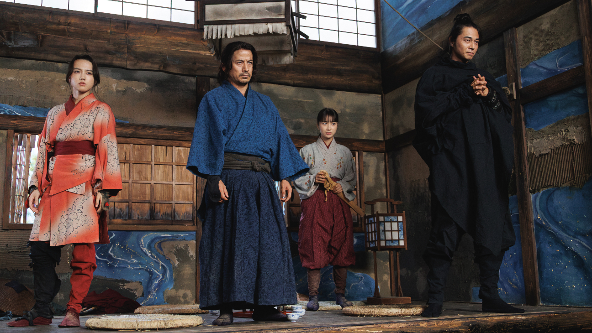

"In an era of peace, the sword still speaks."
Based on the popular manga, Last Samurai Standing is set in the Meiji era, where samurai have been banned from carrying swords. The story follows a legendary former executioner who is forced into a deadly underground tournament where the country's most skilled warriors fight for survival and the chance to reclaim their honor. In a world rapidly modernizing, he must decide if his blade defines his past or his future.